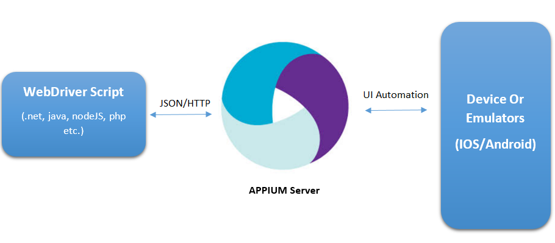
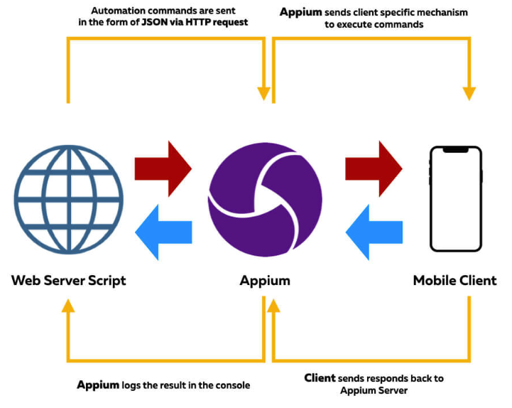
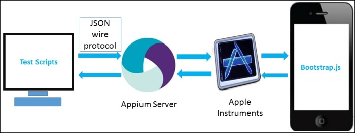

主页
1.1.
前言
1.2.
Appium概览
1.3.
自动化操作iOS
1.4.
自动化操作Android
1.4.1.
搭建环境
1.4.2.
调试界面
1.4.3.
常见问题和心得
1.5.
附录
1.5.1.
参考资料
本书使用 GitBook 发布
自动化操作iOS
自动化操作iOS
此处介绍如何用Appium去自动化操作iOS设备。
Appium的iOS自动化架构


用Appium实现iOS自动化
对于iOS的真机，需要预先配置好才可以：
关于Appium的真机的设置：
官网 英文
XCUITest Real Devices (iOS) - Appium
readthedocs 中文
Real devices ios - appium
GitHub
appium-xcuitest-driver/real-device-config.md at master · appium/appium-xcuitest-driver
iOS真机配置

results matching "
"
No results matching "
"